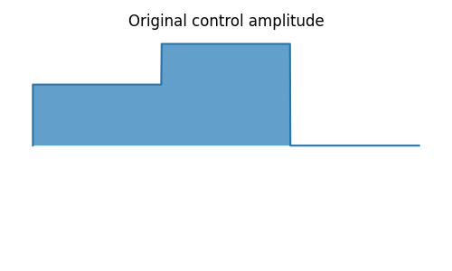
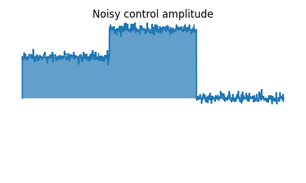

Quantum Information Processing¶
Introduction¶
The Quantum Information Processing (QIP) module aims at providing basic tools for quantum computing simulation both for simple quantum algorithm design and for experimental realization. It offers two different approaches, one with qutip.qip.QubitCircuit calculating unitary evolution under quantum gates by matrix product, another called qutip.qip.device.Processor using open system solver in QuTiP to simulate noisy quantum device.
Quantum Circuit¶
The most common model for quantum computing is the quantum circuit model. In QuTiP, we use qutip.qip.QubitCircuit to represent a quantum circuit. Each quantum gate is saved as a class object qutip.qip.operations.Gate with information such as gate name, target qubits and arguments. To get the matrix representation of each gate, we can call the class method qutip.qip.QubitCircuit.propagators. Carrying out the matrices product, one gets the matrix representation of the whole evolution. This process is demonstrated in the following example.
>>> from qutip.qip.circuit import QubitCircuit, Gate
>>> from qutip.qip.operations import gate_sequence_product
>>> qc = QubitCircuit(N=2)
>>> swap_gate = Gate(name="SWAP", targets=[0, 1])
>>> qc.add_gate(swap_gate)
>>> qc.add_gate("CNOT", controls=0, targets=1)
>>> qc.add_gate(swap_gate)
>>> print(qc.gates)
[Gate(SWAP, targets=[0, 1], controls=None), Gate(CNOT, targets=[1],
controls=[0]), Gate(SWAP, targets=[0, 1], controls=None)]
>>> U_list = qc.propagators()
>>> print(gate_sequence_product(U_list))
Quantum object: dims = [[2, 2], [2, 2]], shape = (4, 4), type = oper, isherm = True
Qobj data =
[[1. 0. 0. 0.]
[0. 0. 0. 1.]
[0. 0. 1. 0.]
[0. 1. 0. 0.]]
The pre-defined gates for the class qutip.qip.Gate are shown in the table below:
Gate name |
Description |
|---|---|
“RX” |
Rotation around x axis |
“RY” |
Rotation around y axis |
“RZ” |
Rotation around z axis |
“SQRTNOT” |
Square root of NOT gate |
“SNOT” |
Hardmard gate |
“PHASEGATE” |
Add a phase one the state 1 |
“CRX” |
Controlled rotation around x axis |
“CRY” |
Controlled rotation around y axis |
“CRZ” |
Controlled rotation around z axis |
“CPHASE” |
Controlled phase gate |
“CNOT” |
Controlled NOT gate |
“CSIGN” |
Same as CPHASE |
“BERKELEY” |
Berkeley gate |
“SWAPalpha” |
SWAPalpha gate |
“SWAP” |
Swap the states of two qubits |
“ISWAP” |
Swap gate with additional phase for 01 and 10 states |
“SQRTSWAP” |
Square root of the SWAP gate |
“SQRTISWAP” |
Square root of the ISWAP gate |
“FREDKIN” |
Fredkin gate |
“TOFFOLI” |
Toffoli gate |
“GLOBALPHASE” |
Global phase |
For some of the gates listed above, qutip.qip.QubitCircuit also has a primitive qutip.qip.QubitCircuit.resolve_gates method that decomposes them into elementary gate sets such as CNOT or SWAP with single-qubit gates. However, this method is not fully optimized. It is very likely that the depth of the circuit can be further reduced by merging quantum gates. Apart from it, there is also a function drawing the circuit with LaTeX code using the Q-qircuit package from http://physics.unm.edu/CQuIC/Qcircuit.
In addition to these pre-defined gates, QuTiP also allows the user to define their own gate. The following example shows how to define a customized gate.
Note
Available from QuTiP 4.4
>>> from qutip.qip.circuit import Gate
>>> from qutip.qip.operations import rx
>>> from qutip import Qobj
>>> import numpy as np
>>> def user_gate1(arg_value):
... # controlled rotation X
... mat = np.zeros((4, 4), dtype=np.complex)
... mat[0, 0] = mat[1, 1] = 1.
... mat[2:4, 2:4] = rx(arg_value)
... return Qobj(mat, dims=[[2, 2], [2, 2]])
...
>>> def user_gate2():
... # S gate
... mat = np.array([[1., 0],
... [0., 1.j]])
... return Qobj(mat, dims=[[2], [2]])
...
>>>
>>> qc = QubitCircuit(2)
>>> qc.user_gates = {"CTRLRX": user_gate1,
... "S" : user_gate2}
>>>
>>> # qubit 0 controlls qubit 1
... qc.add_gate("CTRLRX", targets=[0,1], arg_value=np.pi/2)
>>> # qubit 1 controlls qubit 0
... qc.add_gate("CTRLRX", targets=[1,0], arg_value=np.pi/2)
>>> # we also add a gate using a predefined Gate object
... g_T = Gate("S", targets=[1])
>>> qc.add_gate(g_T)
>>> props = qc.propagators()
>>> props[0]
Quantum object: dims = [[2, 2], [2, 2]], shape = (4, 4), type = oper, isherm = False
Qobj data =
[[1. +0.j 0. +0.j 0. +0.j 0. +0.j ]
[0. +0.j 1. +0.j 0. +0.j 0. +0.j ]
[0. +0.j 0. +0.j 0.7071+0.j 0. -0.7071j]
[0. +0.j 0. +0.j 0. -0.7071j 0.7071+0.j ]]
>>> props[1]
Quantum object: dims = [[2, 2], [2, 2]], shape = (4, 4), type = oper, isherm = False
Qobj data =
[[1. +0.j 0. +0.j 0. +0.j 0. +0.j ]
[0. +0.j 0.7071+0.j 0. +0.j 0. -0.7071j]
[0. +0.j 0. +0.j 1. +0.j 0. +0.j ]
[0. +0.j 0. -0.7071j 0. +0.j 0.7071+0.j ]]
>>> props[2]
Quantum object: dims = [[2, 2], [2, 2]], shape = (4, 4), type = oper, isherm = False
Qobj data =
[[1.+0.j 0.+0.j 0.+0.j 0.+0.j]
[0.+0.j 0.+1.j 0.+0.j 0.+0.j]
[0.+0.j 0.+0.j 1.+0.j 0.+0.j]
[0.+0.j 0.+0.j 0.+0.j 0.+1.j]]
Processor for QIP simulation¶
Note
Available from QuTiP 4.5
In addition to direct matrix product, QuTiP also offers another approach to QIP simulation. Based on the open system solver, qutip.qip.device.Processor in the qutip.qip module simulates quantum circuits at the level of driving Hamiltonians. One can consider the processor as a simulator of a quantum device, on which the quantum circuit is to be implemented. Like a real quantum device, the processor is determined by a list of Hamiltonians, i.e. the control pulses driving the evolution. Given the intensity of the control pulses and the corresponding time slices for each pulse, the evolution can be calculated using the solver. A control pulse is characterized by qutip.qip.pulse.Pulse, consisting of the control Hamiltonian, the targets qubit, the pulse coefficients and the time sequence. We can either use the coefficients as a step function or with cubic spline. For step function, tlist specifies the start and the end of each pulse and thus is one element longer the coeffs. One example of defining the control pulse coefficients and the time array is as follows:
>>> from qutip.qip.device import Processor
>>> proc = Processor(2)
>>> proc.add_control(sigmaz(), cyclic_permutation=True) # sigmaz for all qubits
>>> proc.pulses[0].coeffs = np.array([[1.0, 1.5, 2.0], [1.8, 1.3, 0.8]])
>>> proc.pulses[0].tlist = np.array([0.1, 0.2, 0.4, 0.5])
Note
If the coefficients represent a step function, the length of each array is 1 element shorter than tlist. If it is supposed to be a continuous function, the length should be the same as tlist.
The above example shows the framework and the most essential part of the simulator’s API. For now, it looks like just a wrap for the open system solver. However, based on this, we can implement different physical realizations. They differ mainly in how to find the control pulse for a quantum circuit, which gives birth to different sub-classes:
In general, there are two ways to find the control pulses. The first one, qutip.qip.device.ModelProcessor, is more experiment-oriented and based on physical models. A universal set of
gates is defined in the processor as well as the pulse implementing them in this particular physical model. This is usually the case where control pulses realizing those gates are well known and can be concatenated to realize the whole quantum circuits. Two realizations have already been implemented: the spin chain and the CQED model for quantum computing. In those models, the driving Hamiltonians are predefined. The other approach, based on the optimal control module in QuTiP (see Quantum Optimal Control), is called qutip.qip.device.OptPulseProcessor. In this subclass, one only defines the available Hamiltonians in their system. The processor then uses algorithms to find the optimal control pulses that realize the desired unitary evolution.
Despite this difference, the logic behind all processors is the same:
One defines a processor by a list of available Hamiltonians and, as explained later, hardware-dependent noise. In the model bases processor, the Hamiltonians are predefined and one only need to give the device parameters like frequency and interaction strength.
The control pulse coefficients and time slices are either specified by the user or calculated by the method
qutip.qip.device.Processor.load_circuit, which takes aqutip.qip.QubitCircuitand find the control pulse for this evolution.The processor calculates the evolution using the QuTiP solvers. Collapse operators can be added to simulate decoherence. The method
qutip.qip.device.Processor.run_statereturns a objectqutip.solver.Result.
It is also possible to calculate the evolution analytically with matrix exponentiation by setting analytical=True. A list of the matrices representing the gates is returned just like for qutip.qip.QubitCircuit.propagators. However, this does not consider the collapse operators or the noise. As the system size gets larger, this approach will become very inefficient.
SpinChain¶
qutip.qip.device.LinearSpinChain and qutip.qip.device.CircularSpinChain are quantum computing models base on the spin chain realization. The control Hamiltonians are \(\sigma_x\), \(\sigma_z\) and \(\sigma_x \sigma_x + \sigma_y \sigma_y\). This processor will first decompose the gate into the universal gate set with ISWAP and SQRTISWAP as two-qubit gates, resolve them into quantum gates of adjacent qubits and then calculate the pulse coefficients.
DispersivecQED¶
Same as above, qutip.qip.device.DispersivecQED is a simulator based on Cavity Quantum Electrodynamics. The workflow is similar to the one for the spin chain, except that the component systems are a multi-level cavity and a qubits system. The control Hamiltonians are the single-qubit rotation together with the qubits-cavity interaction \(a^{\dagger} \sigma^{-} + a \sigma^{+}\). The device parameters including the cavity frequency, qubits frequency, detuning and interaction strength etc.
OptPulseProcessor¶
The qutip.qip.device.OptPulseProcessor uses the function in qutip.control.pulseoptim.optimize_pulse_unitary in the optimal control module to find the control pulses. The Hamiltonian includes a drift part and a control part and only the control part will be optimized. The unitary evolution follows
To let it find the optimal pulses, we need to give the parameters for qutip.control.pulseoptim.optimize_pulse_unitary as keyword arguments to qutip.qip.device.OptPulseProcessor.load_circuit. Usually the minimal requirements are the evolution time evo_time and the number of time slices num_tslots for each gate. Other parameters can also be given in the keyword arguments. For available choices, see qutip.control.pulseoptim.optimize_pulse_unitary. It is also possible to specify different parameters for different gates, as shown in the following example:
>>> from qutip.qip.device import OptPulseProcessor
>>> from qutip.operators import sigmaz, sigmax, sigmay
>>> from qutip.tensor import tensor
>>>
>>> # Same parameter for all the gates
... qc = QubitCircuit(N=1)
>>> qc.add_gate("SNOT", 0)
>>>
>>> num_tslots = 10
>>> evo_time = 10
>>> processor = OptPulseProcessor(N=1, drift=sigmaz())
>>> processor.add_control(sigmax())
>>> # num_tslots and evo_time are two keyword arguments
... tlist, coeffs = processor.load_circuit(
... qc, num_tslots=num_tslots, evo_time=evo_time)
>>>
>>> # Different parameters for different gates
... qc = QubitCircuit(N=2)
>>> qc.add_gate("SNOT", 0)
>>> qc.add_gate("SWAP", targets=[0, 1])
>>> qc.add_gate('CNOT', controls=1, targets=[0])
>>>
>>> processor = OptPulseProcessor(N=2, drift=tensor([sigmaz()]*2))
>>> processor.add_control(sigmax(), cyclic_permutation=True)
>>> processor.add_control(sigmay(), cyclic_permutation=True)
>>> processor.add_control(tensor([sigmay(), sigmay()]))
>>> setting_args = {"SNOT": {"num_tslots": 10, "evo_time": 1},
... "SWAP": {"num_tslots": 30, "evo_time": 3},
... "CNOT": {"num_tslots": 30, "evo_time": 3}}
>>> tlist, coeffs = processor.load_circuit(
... qc, setting_args=setting_args, merge_gates=False)
Noise Simulation¶
In the common way of QIP simulation, where evolution is carried out by gate matrix product, the noise is usually simulated with bit flipping and sign flipping errors. The typical approaches are either applying bit/sign flipping gate probabilistically or applying Kraus operators representing different noisy channels (e.g. amplitude damping, dephasing) after each unitary gate evolution. In the case of single qubit, they have the same effect and the parameters in the Kraus operators are exactly the probability of a flipping error happens during the gate operation time.
Since the processor simulates the state evolution at the level of the driving Hamiltonian, there is no way to apply an error operator to the continuous time evolution. Instead, the error is added to the driving Hamiltonian list (coherent control error) or the collapse operators (decoherent error) contributing to the evolution. Mathematically, this is no different from adding error channel probabilistically (it is actually how qutip.mcsolve works internally). The collapse operator for single-qubit amplitude damping and dephasing are exactly the destroying operator and the sign-flipping operator. One just needs to choose the correct coefficients for them to simulate the noise, e.g. the relaxation time T1 and dephasing time T2. Because it is based on the open system evolution instead of abstract operators, this simulation is closer to the physical implementation and requires less pre-analysis of the system.
Compared to the approach of Kraus operators, this way of simulating noise is more computationally expensive. If you only want to simulate the decoherence of single-qubit relaxation, there is no need to go through all the calculations. However, this simulator is closer to the real experiment and, therefore, more convenient in some cases, such as when coherent noise or correlated noise exist. For instance, a pulse on one qubit might affect the neighbouring qubits, the evolution is still unitary but the gate fidelity will decrease. It is not always easy or even possible to define a noisy gate matrix. In our simulator, it can be done by defining a qutip.qip.device.ControlAmpNoise (Control Amplitude Noise). Here we show two examples (the source code can be found in the gallery):
The first example is a processor with one qubit under rotation around the z-axis and relaxation time \(T_2=5\). We measure the population of the \(\left| + \right\rangle\) state and observe the Ramsey signal:

The second example demonstrates a biased Gaussian noise on the pulse amplitude. For visualization purposes, we plot the noisy pulse intensity instead of the state fidelity. The three pulses can, for example, be a zyz-decomposition of an arbitrary single-qubit gate:
 As the design of our simulator follows the physical realization, so is the noise simulation. Noise can be added to the processor at different levels:
The decoherence time T1 and T2 can be defined for the processor or for each qubit. When calculating the evolution, the corresponding collapse operators will be added automatically to the solver.
The noise of the physical parameters (e.g. detuned frequency) can be simulated by changing the parameters in the model, e.g. laser frequency in cavity QED. (This can only be time-independent since QuTiP open system solver only allows varying coefficients, not varying Hamiltonian operators.)
The noise of the pulse intensity can be simulated by modifying the coefficients of the Hamiltonian operators or even adding new Hamiltonians.
To add noise to a processor, one needs to first define a noise object qutip.qip.noise.Noise. The simplest relaxation noise can be defined directly in the processor with relaxation time. Other pre-defined noise can be found as subclasses of qutip.qip.noise.Noise. We add noise to the simulator with the method qutip.qip.device.Processor.add_noise.
Workflow of the Processor¶
This section helps you understand the workflow inside the simulator.

The figure above shows how the noise is processed in processor. The noise is defined separately in a class object. When called, it takes parameters and the unitary noiseless qutip.QobjEvo from the processor, generates the noisy version and sends the noisy qutip.QobjEvo together with the collapse operators to the processor.
When calculating the evolution, the processor first creates its own qutip.QobjEvo of the noiseless evolution.
It will then find all the noise objects saved in the attributes qutip.qip.device.Processor.noise and call the corresponding methods to get the qutip.QobjEvo and a list of collapse operators representing the noise. (For collapse operators, we don’t want to add all the constant collapse into one time-independent operator, so we use a list).
The processor then combines its own qutip.QobjEvo with those from the noise object and give them to the solver. The figure below shows how the noiseless part and the noisy part are combined.